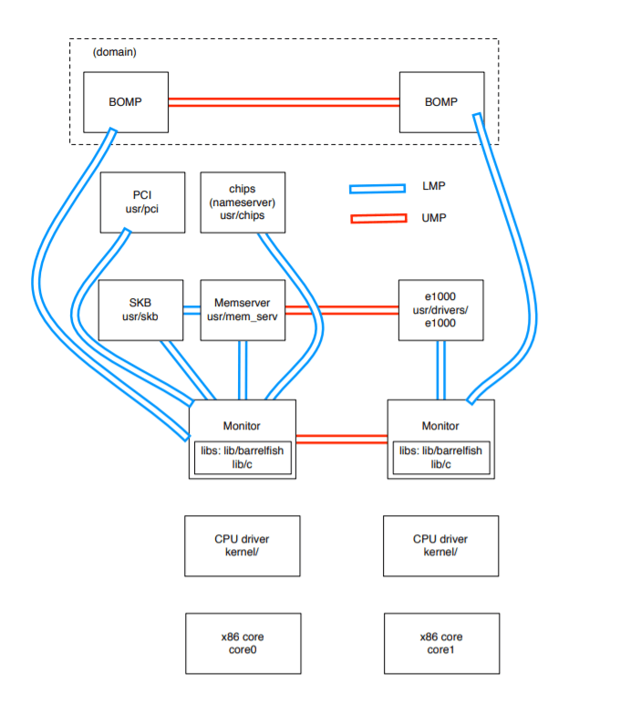
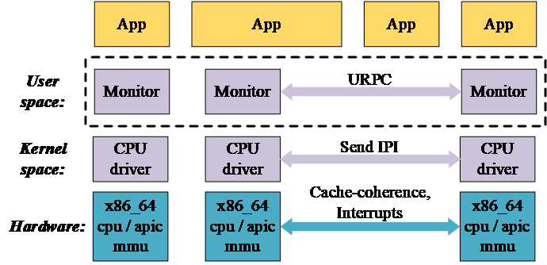
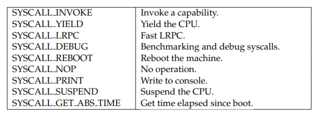
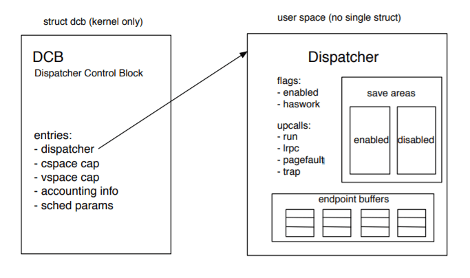

网上貌似没有Barrelfish的中文文档，正好最近在写文献综述，所以这里整理一下，为以后想要研究这个系统的童鞋省一点时间。
简介
Barrelfish是微软剑桥研究院和苏黎世理工大学提出的一个面向异构、众核体系的操作系统，其旨在解决异构、众核体系结构上操作系统的可扩展性问题。系统基于微内核和多内核(Multikernel)的思想设计。
多内核是指在每一个处理器核心上都运行一个操作系统内核实例，内核之间不共享任何内存（即使在有共享内存的硬件上），系统的其余部分是构建在这些内核之上的单核进程，可以视为一个分布式系统，系统节点之间基于显式的消息进行通信。即共享内存只用于显式的消息传递、数据传递以及动态启动其他内核时。用户级应用进程可以跨核部署并共享地址空间，但这个功能是由Barrelfish用户空间的运行时库提供的。下面是Barrelfish的架构示意图。其中的UMP(User Message Passing)和LMP(Local Message Passing)是Barrelfish内的两种消息通信方式，UMP是跨核的消息通信，LMP是核内消息通信。

由于Barrelfish的内核兼容各种常见的架构，如x86、ARMv7、ARMv8，且可以实现核心的“热插拔”，所以其内核被称为CPU Driver（即可以理解为对不同CPU的驱动）。CPU Driver对Dispacher进行调度，处理中断、异常、trap、页错误等，维护权能（Capaability）数据，并提供基于权能的系统调用（Barrelfish的系统调用是建立在权能的基础上的，系统调用其实就是对各种不同类型的权能的invoke操作，之后会详细讲Barrelfish的权能系统）。
CPU driver对底层硬件进行抽象，利用Capability进行权限保护，并负责时钟中断和进程调度等操作系统最基本的功能。对于像线程调度，内存管理，文件系统等高级操作系统功能按照微内核的设计思想在用户层实现。每个核上的用户空间还运行着一个特殊的用户进程，名为Monitor。
Monitor主要维护了一份复制的系统状态，如页表和内存使用情况等，并使用一致性协议来保持系统状态的全局一致性。除此之外，Monitor还负责核内和核间的进程间通信的建立与维护。总之，可以把monitor理解为内核在用户空间的一个代理。
上面提到的Dispatcher概念借鉴于K42系统，相当于进程的概念，内核负责调度和运行一个个Dispatcher，Dispatcher则可以运行和调度自己内部的不同的线程。多个不同核上的负责同一个功能的共享虚拟内存空间的Dispatcher构成一个程序（Domain）,当然一个程序若只部署在一个核上，那它就只对应一个单核Dispatcher。Dispatcher可以被视作Domain在某个内核（CPU driver）的唯一实体，Dispatcher间通过特定的通信接口交换数据和信息。下面还是一个Barrelfish示意图。

内核(CPU Driver)
CPU Driver是Barrelfish的内核，运行于Barrelfish所运行的机器上的单个处理器核心里，支持多种处理器架构。CPU Driver是单线程、不可抢占的，运行在关中断的模式下。可以认为它在连续地运行异常处理程序，比如中断(interrupt)、异常(fault)、来自用户空间的系统调用(system call)。如果没有可以运行的异常处理程序，它就执行一个用户空间的任务。
CPU Driver的功能包括:
- 负责时钟中断和全部异常，并将其他高级中断转发到用户层
- 调度本核上的所有用户进程(Dispatchers）
- 基于Capabiltiy提供一组最基本的系统调用接口为用户应用和高级系统服务应用提供服务
- 负责本核上的进程间通信
- 对硬件的安全访问(MMU、APIC等等)
- 对内存和内核对象的访问(基于capability(权能)实现)
- 启动初始化过程和调起第一个用户进程
CPU Driver提供的系统调用：

CPU驱动程序不提供内核线程，原因有二。首先，Barrelfish提供给用户空间程序的处理器抽象是一个dispatcher，而不是线程（一个Dispatcher内可以有多个用户线程）。其次，由于内核是单线程的且不可抢占的，因此它仅为所有操作使用一个静态分配的堆栈。在执行完单个异常处理程序之后，将丢弃并重置此堆栈的内容。
Barrelfish目前提供两种在编译时指定的调度方式：
- 轮转调度(RR)
- 基于速率的最早截止期调度法(rate-based earliest deadline scheduler) (具有更好的实时性)
进程(Dispatcher)
Dispatcher是内核调度的单元，相当于Unix中进程的概念。一个应用程序(在Barrelfish里称为domain)可以分布在多个核上，在每个核上都有一个dispatcher。Dispatcher不能在核间迁移。
当内核根据调度结果决定运行某一个dispatcher时，内核需要“upcall”该dispatcher，系统从内核态进入用户态，之后与该dispatcher对应的用户级代码开始执行用户空间的线程调度，以及处理其他事件（比如来自内核的缺页错误、或者Domain间消息）。
内核为每个dispatcher维护一个DCB (dispatcher控制块)，如图所示，DCB里面包含了这个dispatcher的各种信息，包括
- CSpace（Capability空间，即所拥有的所有Capabiltiy，在内核中的形式是一个二级capability查询表）
- VSpace（页表，以vode类型的capability形式实现）
- 一些调度参数
- 指向用户空间dispacher结构体的指针（用于调度dispatcher内部的线程）

每一个dispatcher可以有两种模式，分别是enabled和disabled，当处于enabled模式下时，该dispatcher运行dispatcher下的用户线程，当处于disabled模式下时，该dispatcher运行dispatcher自身代码（如管理TCB、运行线程队列中的线程）。
Dispatcher定义了一组upcall的接口，以供内核对自身进行调度。其中最主要的upcall是run()，当内核决定调度某个dispatcher时，它以指向该dispatcher的页表基址的capability为参数调用该dispatcher的run()，然后该dispatcher决定运行哪一个用户线程，恢复该线程的状态，并运行该线程。在dispatcher被run()之后，以及用户线程被执行之前，该dispatcher都是disable模式，在用户线程开始运行后，该dispatcher处于enabled模式。
当处于enabled模式下的disaptcher被抢占时，内核把所有寄存器状态存在该dispatcher的“enabled区域”（见上图），当该dispatcher之后重新被调度时，它可以从enabled区域恢复之前的寄存器状态，继续运行之前的用户线程，也可以调度另外一个用户线程来运行，但在执行另外一个用户线程之前必须先把之前的用户线程的寄存器状态存到TCB里。
当处于disabled模式下的dispatcher被抢占时，内核把所有寄存器状态存在该dispatcher的“disabled区域”（见上图）,当内核调度一个处于disabled模式下的dispatcher时，内核不会调用其run()类型的upcall，而是从disabled区域恢复之前的寄存器状态，允许之前被打断的dispatcher自身代码从被抢占处继续运行。
运行时库(Runtime library)
Barrelfish提供两个基本的库:
- 标准C库
- lib barrelfish
后者实现了以下系统功能:
- 基于dispatcher的upcall的用户级线程调度
- 基于memserver与其他进程间通信的内存管理(memserver是系统服务的dispatcher)
- capability管理(维护一个应用(domain)的全部cap)
- 基于capability invocation(对不同类型cap的调用)实现虚拟内存空间的构建
- 用户级缺页处理
- 基于消息的通信,包括waitset机制的实现
权能(Capability)
Capability可以看作是访问某种资源的令牌、凭证或票据，是提供给主体对资源实体具有特定权限的不可伪造的标志，在系统实现中至少必须包含两种信息：
- 它所指向的资源的实际地址
- 它的拥有者对该资源所拥有的权限集合（即其拥有者可以对该资源执行什么样的操作）。
基于Capability的访问控制机制有利于实现对系统安全范畴中权限细粒度化(fine-grained privilege)和最小特权原则(least privilege)的支持，即进程所能访问到的资源范围不应大于其完成任务所需要的资源的范围。
Barrelfish使用了基于Capability的访问控制机制,用来控制系统中进程对系统中物理内存、内核对象的操作。关于Capabiltiy系统的设计与实现可以参考这篇文章